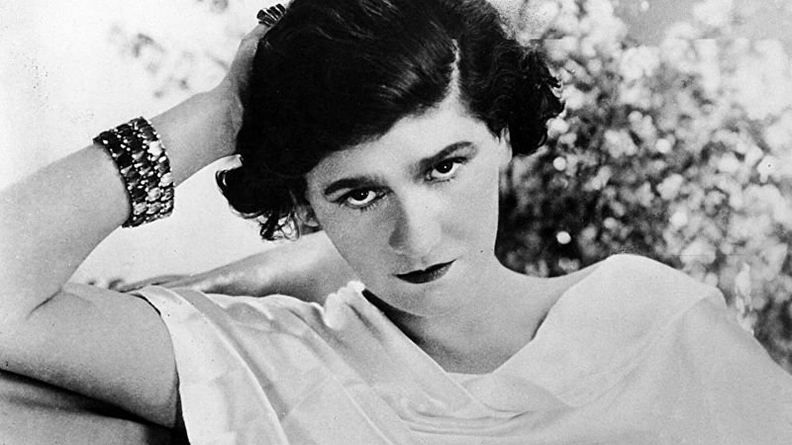
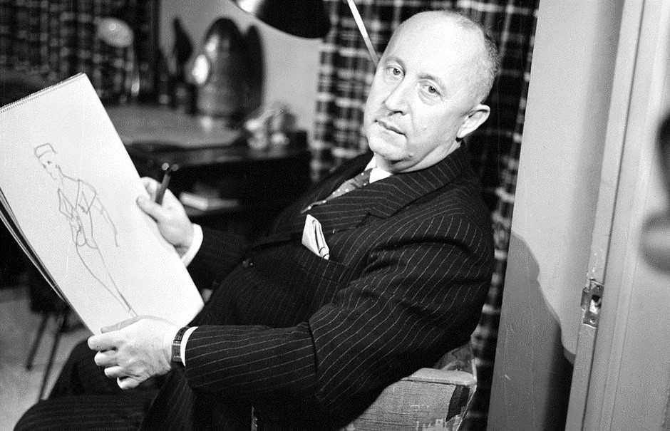
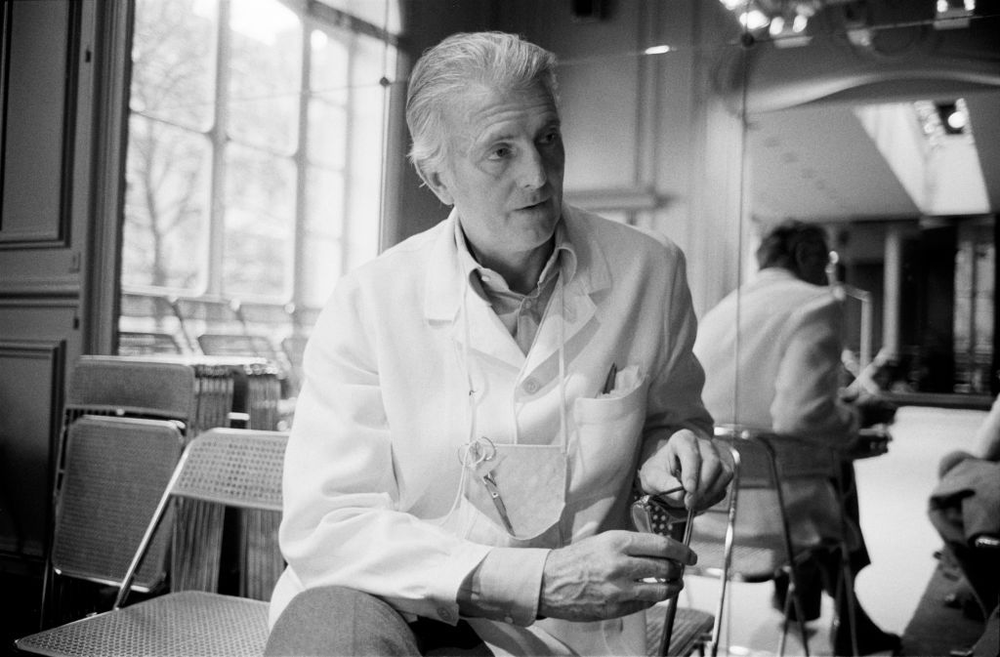
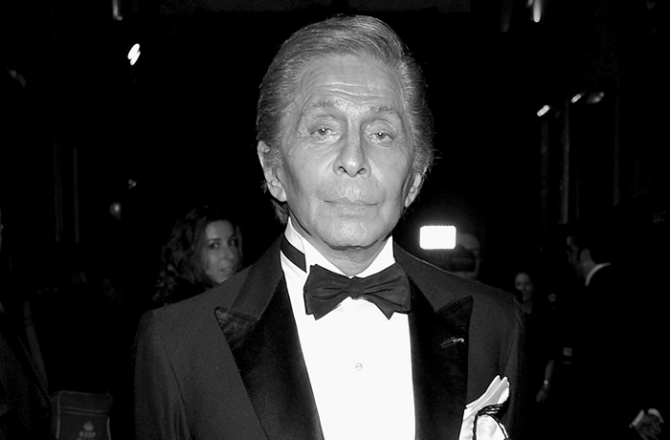
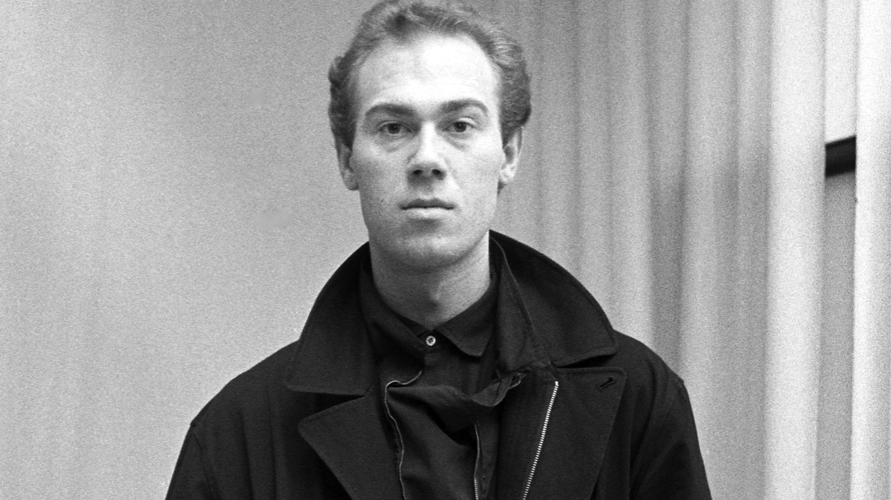

Gabrielle Bonheur "Coco" Chanel (19 August 1883 – 10 January 1971) was a French fashion designer and businesswoman. The founder and namesake of the Chanel brand, she was credited in the post-World War I era with popularizing a sporty, casual chic as the feminine standard of style. A prolific fashion creator, Chanel extended her influence beyond couture clothing, realizing her aesthetic design in jewellery, handbags, and fragrance. Her signature scent, Chanel No. 5, has become an iconic product, and Chanel herself designed her famed interlocked-CC monogram, which has been in use since the 1920s.
Christian Dior (21 January 1905 – 24 October 1957) was a French fashion designer, best known as the founder of one of the world's top fashion houses Christian Dior SE. Dior's designs were more voluptuous than the boxy, fabric-conserving shapes of the recent World War II styles. He was a master at creating shapes and silhouettes. His look employed fabrics lined predominantly with percale, boned, bustier-style bodices, hip padding, wasp-waisted corsets and petticoats that made his dresses flare out from the waist, giving his models a very curvaceous form.
Count Hubert James Marcel Taffin de Givenchy (20 February 1927 – 10 March 2018) was a French aristocrat and fashion designer who founded the house of Givenchy in 1952. His style was marked by innovation, contrary to the more conservative designs by Dior, and he is credited with introducing in 1957 the loose-fitting-but-narrow-hemmed "sack/sac dress," soon copied by Christian Dior for his 1957 Fuseau/Spindle line. His first collections were characterized by the use of rather cheap fabrics for financial reasons, but they always piqued curiosity through their design.
Valentino Clemente Ludovico Garavani (born 11 May 1932), known mononymously as Valentino, is an Italian fashion designer, the founder of the Valentino brand and company. In 1960 Valentino opened a fashion house in Rome on the posh Via Condotti with the backing of his father and an associate of his. More than an atelier, the premises resembled a real "maison de haute couture". Valentino became known for his red dresses, in the bright shade that became known in the fashion industry as "Valentino red". He is also celebrated for his profound ability to make women look utterly glamourous.
Giorgio Armani (born 11 July 1934) is an Italian fashion designer. He first gained notoriety working for Cerruti and then for many others, including Allegri, Bagutta and Hilton. He formed his company, Armani, in 1975, which eventually diversified into music, sport and luxury hotels. By 2001 Armani was acclaimed as the most successful designer of Italian origin, and is credited with pioneering red-carpet fashion. Armani is also the first designer to ban models who had a Body Mass Index under 18, revolutionizing the fashion industry and transforming how the industry perceives body image.
Martin Margiela (born 9 April 1957) is a Belgian fashion designer and the founder of French fashion house Maison Margiela. After graduation from the Royal Academy of Fine Arts (Antwerp) in 1979, he based himself in Paris and worked as a freelance designer for five years. Between 1985 and 1987 he worked for Jean Paul Gaultier, before showing his first collection under his own label Maison Margiela, which he started with his business partner Jenny Meirens in 1989.


Log In
Username
Password